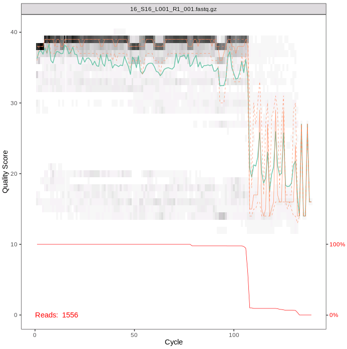
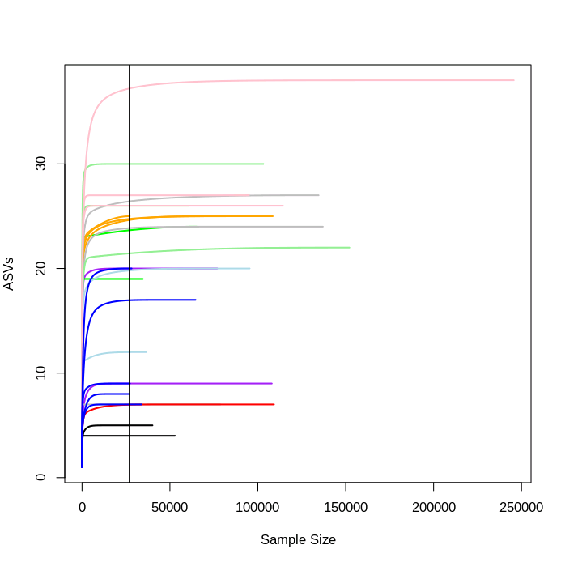
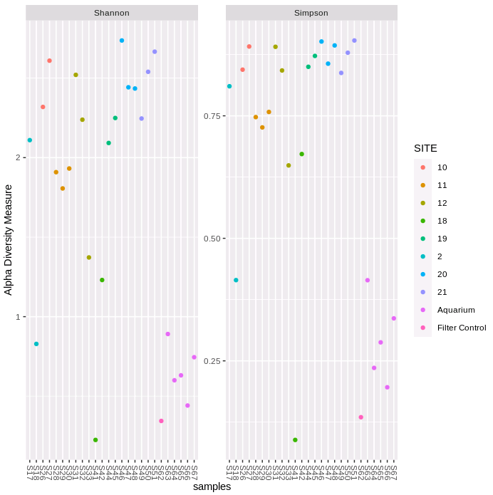
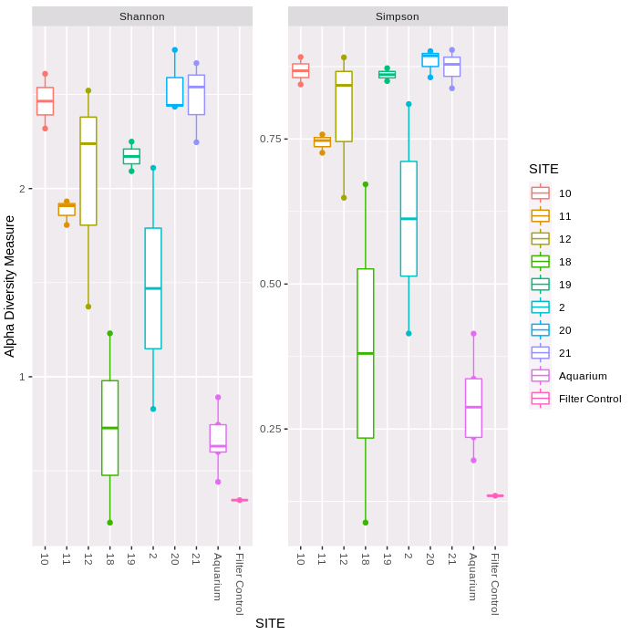
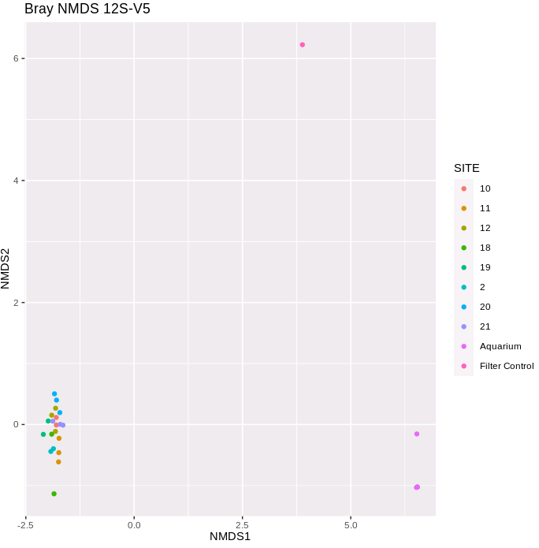
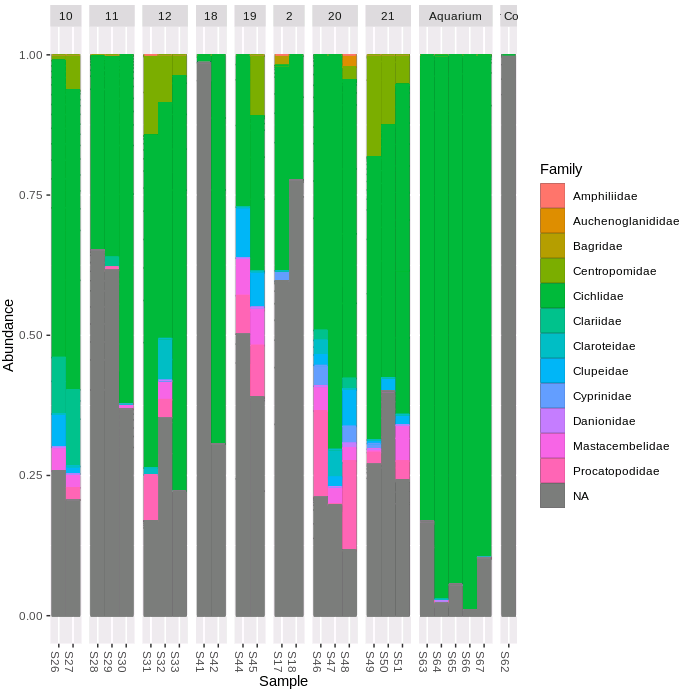
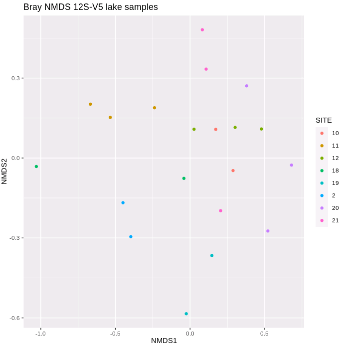

Chapter 13 Optional: guide to analysing the second primer pair
13.1 Loading the data
Load the DAD2 packages needed for analysis as before.
The two primer pairs were multiplexed together for each sample, so our input path and lists of file names and locations (fnFs and fnRs) remain the same.
13.2 Identifying and removing primers
Now to carry out primer removal. DADA2 requires the primers you used to be trimmed off the forward and reverse of your reads. We will use the software cutadapt again for this, which will this time identify and remove the 12S-V5 primers and discard any other sequences (including those we have already analysed for MiFish-U).
Read in your forward and reverse primer sequences for the 12S-V5 primer set, but give them different variable names. The 12S-V5 primers do not contain any degenerate bases but cutadapt is able to handle any degenerate bases you may have in your own primer sequences.
Here are the primer sequences again, but formatted so they are a little easier to read. When you type them into R though you should do this with no spaces, as above.
12S-V5 FWD: ACT GGG ATT AGA TAC CCC
12S-V5 REV: TAG AAC AGG CTC CTC TAG
13.2.1 Primer orientation checking
Let’s check the orientation of these primers. We know how our libraries were created and sequenced so we are expecting that the forward primer should be located in a forward orientation in the forward read and the reverse primer should be located in the forward orientation in the reverse read.
For your own data you might be less certain as to which orientation your primers are in your reads.
We can use the allOrients function again to make a list of all orientations of our primer sequences (forward, complement, reverse and reverse complement, again make sure to give these R variables a unique name). Note that if you can copy this from your previous notebook.
FWD2.orients <- allOrients(FWD2)
FWD2.orients # print all orientations of the forward primer to the console
REV2.orients <- allOrients(REV2)
REV2.orients # print all orientations of the reverse primer to the consoleWe have already filtered any Ns from our raw data when we processed the MiFish primer sequences, so we can use those output files to find and trim the 12S-V5 primer sequences.
fnFs.filtN <- file.path(output.path, "filtN", basename(fnFs))
fnRs.filtN <- file.path(output.path, "filtN", basename(fnRs))The primerHits function will use all possible 12S-V5 primer combinations to count the number of times a primer is found in the forward and reverse read in each orientation.
rbind(FWD2.ForwardReads = sapply(FWD2.orients, primerHits, fn = fnFs.filtN[[1]]),
FWD2.ReverseReads = sapply(FWD2.orients, primerHits, fn = fnRs.filtN[[1]]),
REV2.ForwardReads = sapply(REV2.orients, primerHits, fn = fnFs.filtN[[1]]),
REV2.ReverseReads = sapply(REV2.orients, primerHits, fn = fnRs.filtN[[1]]))The [[1]] part of the rbind command runs the function on the first file in our list, and it will take a little while to run.
As with MiFish, we have both primers found as expected in the forward orientation on our forward and reverse read in this sample. However, there are also the same number or more hits for the reverse complements of the primer sequences. This is actually a bit of an odd looking sample as there are very few reads (< 2,000) matching the primer sequence in the forward orientation, so let’s check another sample to get a better idea of the 12S-V5 primers in these data.
rbind(FWD2.ForwardReads = sapply(FWD2.orients, primerHits, fn = fnFs.filtN[[5]]),
FWD2.ReverseReads = sapply(FWD2.orients, primerHits, fn = fnRs.filtN[[5]]),
REV2.ForwardReads = sapply(REV2.orients, primerHits, fn = fnFs.filtN[[5]]),
REV2.ReverseReads = sapply(REV2.orients, primerHits, fn = fnRs.filtN[[5]]))Here we can see that (a) the reverse complement of the forward primer sequence is frequently seen in the reverse reads, and (b) the reverse complement of the reverse primer is frequently seen in the forward reads.
The 12S-V5 forward primer is actually situated in the same location as the MiFish-U reverse primer (see the figure in section 13), so in this case we are seeing it in both the 12S-V5 and the MiFish-U sequences.
The expected length of the 12S-V5 amplicons is ~106 bp, and hence the Illumina reads have sequenced through the full amplicon and into the reverse primer.
This explains the numbers, and neither of these are problematic for cutadapt to identify and trim these primers to leave us with the 12S-V5 sequences for further analysis.
13.2.2 Cutadapt
Copy and paste the path to cutadapt into your new notebook.
Specify the path to a new output directory (‘cutadapt2’) where we will put the 12S-V5 cutadapt output files.
path.cut2 <- file.path(output.path, "cutadapt2")
if(!dir.exists(path.cut2)) dir.create(path.cut2)
fnFs.cut2 <- file.path(path.cut2, basename(fnFs))
fnRs.cut2 <- file.path(path.cut2, basename(fnRs))Here we specify the options needed by cutadapt in order to trim the forward orientation of the forward and reverse primer off the forward and reverse read and the reverse complement off the end of the forward and reverse reads.
FWD2.RC <- dada2:::rc(FWD2)
REV2.RC <- dada2:::rc(REV2)
# Trim FWD and the reverse-complement of REV off of R1 (forward reads)
R1.flags2 <- paste("-g", FWD2, "-a", REV2.RC)
# Trim REV and the reverse-complement of FWD off of R2 (reverse reads)
R2.flags2 <- paste("-G", REV2, "-A", FWD2.RC) In addition to trimming the primers from the reads we will also specify a couple of extra useful parameters.
--discard-untrimmed this tells cutadapt to discard any read where the primers haven’t been trimmed off. This is especially important for our data as our files at the moment contain sequences amplified using both MiFish-U and 12S-V5 primer sets. We only want to keep sequences matching the 12S-V5 primer set for this analysis.
--minimum-length 60 discard reads shorter than 60bp. This will remove unexpected short reads and help speed up further analysis.
Run cutadapt. (Note. The cutadapt step is time intensive so this might take a little while to run, probably about 15 minutes).
for(i in seq_along(fnFs)) {
system2(cutadapt, args = c(R1.flags2, R2.flags2, "-n", 2,
# -n 2 required to remove FWD and REV
"-o", fnFs.cut2[i], "-p", fnRs.cut2[i], # output files
fnFs.filtN[i], fnRs.filtN[i], # input files
"--discard-untrimmed",
"--minimum-length 60"))
}We can now check whether all the primers have been removed using the primerHits function we specified earlier.
rbind(FWD2.ForwardReads = sapply(FWD2.orients, primerHits, fn = fnFs.cut2[[1]]),
FWD2.ReverseReads = sapply(FWD2.orients, primerHits, fn = fnRs.cut2[[1]]),
REV2.ForwardReads = sapply(REV2.orients, primerHits, fn = fnFs.cut2[[1]]),
REV2.ReverseReads = sapply(REV2.orients, primerHits, fn = fnRs.cut2[[1]]))We now have no primers remaining in our file.
13.3 Checking the quality of your data
Those of you who attended our quality Introduction to sequencing data and quality control course we used FastQC to check the quality of our data. DADA2 has its own quality control option, which plots a similar read length by quality figure.
To run first import the cutadapt files and then run the plotQualityProfile function
# Specify the paths and file names the forward and reverse primer cleaned files
cutFs2 <- sort(list.files(path.cut2,
pattern = "_L001_R1_001.fastq", full.names = TRUE))
cutRs2 <- sort(list.files(path.cut2,
pattern = "_L001_R2_001.fastq", full.names = TRUE))
# Extract sample names
get.sample.name <- function(fname) strsplit(basename(fname), "_")[[1]][2]
sample.names <- unname(sapply(cutFs2, get.sample.name))
head(sample.names)
# check the quality for the first file
plotQualityProfile(cutFs2[1:1])To interpret this plot, the gray-scale heatmap shows the the frequency of each quality score along the forward read length.The green line is the median quality score and the orange lines are the quartiles. The red line at the bottom of the plot represents the proportion of reads of that particular length.
The overall quality is good for our forward reads, as for the MiFish sequences. The majority of the reads are just over 100bp long, as we expect with this shorter amplicon.

13.4 Cleaning your data
We will now filter our data to remove any poor quality reads.
First set the path to a directory to store the filtered output files called filtered2.
filtFs2 <- file.path(path.cut2, "../filtered2", basename(cutFs2))
filtRs2 <- file.path(path.cut2, "../filtered2", basename(cutRs2))Now run filterAndTrim, using the standard filtering parameters:
maxN=0After truncation, sequences with more than 0 Ns will be discarded. (DADA2 requires sequences contain no Ns)truncQ = 2Truncate reads at the first instance of a quality score less than or equal to 2rm.phix = TRUEDiscard reads that match against the phiX genomemaxEE=c(2, 2)After truncation, reads with higher than 2 “expected errors” will be discardedminLen = 60Remove reads with length less than 60 (note these should have already been removed by cutadapt)multithread = TRUEinput files are filtered in parallel
out2 <- filterAndTrim(cutFs2, filtFs2, cutRs2, filtRs2, maxN = 0, maxEE = c(2, 2),
truncQ = 2, minLen = 60, rm.phix = TRUE, compress = TRUE,
multithread = TRUE)
out2Some samples have low read numbers. These could be poor quality samples or the negatives controls. Some of the samples with low read numbers are different to those with low reads for MiFish-U. This might be because (through sample composition or by chance) the PCR or sequencing has worked better for one primer combination than the other for the same sample.
13.5 Identification of ASVs
13.5.1 Generate an error model
First we need to model the error rates of our dataset using both the forward and reverse reads. Each dataset will have a specific error-signature with errors introduced by PCR amplification and sequencing.
We can use the plotErrors function to check the estimated error rates.
Interpreting the plots, as a reminder:
The error rates for each possible transition (e.g. A→C, A→G) are shown
Red line - expected based on the quality score
Black line - estimate
Black dots - observed
The error plots look very similar to those for the MiFish-U sequences - the observed dots track well with the expected line, and the error rates drop with increasing quality scores. Sanity checks complete, we can proceed with the analysis.
13.5.2 Dereplication
The next step is to dereplicate identical reads, after first checking again that all the samples are present after filtering.
exists2 <- file.exists(filtFs2) # check that all the samples
#are still present after filtering
derepFs2 <- derepFastq(filtFs2[exists2], verbose=TRUE)
derepRs2 <- derepFastq(filtRs2[exists2], verbose=TRUE)
# Name the derep-class objects by the sample names
names(derepFs2) <- sample.names[exists2]
names(derepRs2) <- sample.names[exists2]13.5.4 Merging paired end reads
It is now time to merge the two files. By default the minimum overlap allowed between the two samples is 12 bp, and no mismatches are permitted.
13.5.5 Making our ASV matrix
Now it is time to make the counts table. Each column represents a single ASV and each row is an individual sample.
There are 583 ASVs in our matrix.
13.5.6 Chimera detection and removal
The last step in generating our ASV matrix is to detect and remove any chimeric sequences.
seqtab2.nochim <- removeBimeraDenovo(seqtab2, method="consensus",
multithread=TRUE, verbose=TRUE)
dim(seqtab2.nochim)We have 212 ASVs remaining after filtering out chimeras. There are fewer ASVs for the 12S-V5 data than for the MiFish data. This could be as it is a shorter amplicon and therefore has less potential for variation, or potentially the primers could be less efficient at/have more mismatches when amplifying some taxa.
In these data ~ 7.5% of the merged sequence reads were identified as chimeric.
CHeck the range of ASV lengths:
13.5.7 Sequence tracking sanity check
The last thing to do in this section is to track the number of sequences through the pipeline to check whether everything has run as expected and whether there are any steps where we loose a disproportionate number of sequences. If we end up with too few reads to run further analysis we can use this table to identify any step which might require further investigation and optimisation.
We will generate the number of sequences using the getN function. You can copy and paste this from the previous notebook.
getN <- function(x) sum(getUniques(x))
track2 <- cbind(out2, sapply(dadaFs2, getN),
sapply(dadaRs2, getN),
sapply(mergers2, getN),
rowSums(seqtab2.nochim))
colnames(track2) <- c("input", "filtered",
"denoisedF", "denoisedR",
"merged", "nonchim")
rownames(track2) <- sample.names
track2There are five samples with fewer than 2000 reads. However, our eDNA filter negative control (S62) has >100000 sequences.
13.6 Assigning taxonomy
To assign taxonomy we will use a custom reference database containing fish sequences available for the 12S-V5 amplicon region for species found in Lake Tanganyika and its broader catchment area.
taxa12S <- assignTaxonomy(seqtab2.nochim,
"/pub39/tea/nsc006/NEOF/metabarcoding_workshop/taxonomy/12S-V5_Reference_Database.fasta",
multithread=TRUE, verbose = T)
taxa12S.print <- taxa12S
rownames(taxa12S.print) <- NULL
head(taxa12S.print)For this marker all of the first six ASVs have been assigned to class Actinopteri, four to the family-level (all Cichlidae), and one to the species-level (Pseudosimochromis babaulti).
13.7 Further analysis
As the 12S-V5 sequences are all from the same samples then we can use the same meta data table as for the MiFish analysis.
Before we start we will clean up the dataset. One of our negative controls seems to be mostly clean of contaminants (S72, with only 9 reads assigned). We will remove this from further analysis, but retain our filter control negative (S62) for further investigation.
meta<-read.csv("/pub39/tea/nsc006/NEOF/metabarcoding_workshop/sample_info.csv",
row.names = 1)
seqtab2.rmcontrol<-seqtab2.nochim[-31,]
meta2.rmcontrol<-meta[-31,]We will also remove samples which appear to have failed/have very low sequence numbers in our dataset.
#Check number of sequences per sample
rowSums(seqtab2.rmcontrol)
# S16, S25, S40 and S43 all have low sequence counts. So we will remove these rows.
seqtab2.rmlow<-seqtab2.rmcontrol[-c(1,4,13,16),]
meta2.rmlow<-meta2.rmcontrol[-c(1,4,13,16),]
# Print the minimum sequence number in one sample.
min(rowSums(seqtab2.rmlow))
# The lowest number of sequences in one sample is now 26841.13.8 Rarefaction curves
The more deeply we sequence a sample the more species we discover, until this accumulation levels off as we have found all or as many ASVs/species as we are going to find. This becomes a problem as samples are often sequenced at different depths so will have reached different points in the curve. This is a common difficulty as pooling and sequencing equal amounts of each sample can be tricky.
One way to visualise this is to plot a rarefaction curve for each sample.
Note: remember to load the required packages first.
rarecurve(seqtab2.rmlow, step=100, col=meta2.rmlow$COLOUR, lwd=2, ylab="ASVs", label=F)
# add a vertical line to represent the fewest sequences in any sample
abline(v=(min(rowSums(seqtab2.rmlow))))
You can see that each sample levels off at a different sequencing depth and each sample has been sequenced at different depths.
Overall the number of ASVs is lower, but as with MiFish the ASV numbers level off for almost all samples before the minimum sequencing depth is reached.
13.9 Alpha diversity
Measures of alpha diversity are used to describe diversity within a sample.
First make a phyloseq object. To do this we first read in our ASV, taxonomy and metadata tables before making the plyloseq object phylo2.
seqtab2.rmlow2<-t(as.data.frame(seqtab2.rmlow))
phylo_asv2 <- otu_table(seqtab2.rmlow2, taxa_are_rows=TRUE)
phylo_tax2 <- tax_table(taxa12S)
phylo_samples2 <- sample_data(meta2.rmlow)
phylo2 <- phyloseq(phylo_asv2, phylo_tax2, phylo_samples2)
sample_names(phylo2)
rank_names(phylo2)
sample_variables(phylo2) Plot the two alpha diversity metrics.
plot_richness(phylo2, measures=c("Shannon", "Simpson"),
color = "SITE")
plot_richness(phylo2, x="SITE", measures=c("Shannon", "Simpson"),
color = "SITE") + geom_boxplot()

The first figure plots the diversity measure per sample and colours the output by site. The second figure combines the replicates to plot as a boxplot. We can see that both the Shannon and Simpson diversity is lower for 12S-V5, and variability within sampling sites is generally higher. The filter negative control has very low diversity (only S41 is lower).
13.10 Beta diversity
Beta diversity compares the difference in diversity between two sites, or to put it another way it calculates the number of species that are not the same in the two sites.
We will normalise the data before running the beta diversity calculation. We will transform the data into proportions to be used for Bray-Curtis distances.
We then generate and plot the NMDS (Non-metric MultiDimenstional Scaling) using Bray-Curtis distances.
ord.nmds.bray2 <- ordinate(ps.prop2, method="NMDS", distance="bray")
plot_ordination(ps.prop2, ord.nmds.bray2,
color="SITE", title="Bray NMDS 12S-V5")
This is a very different pattern to that for the MiFish data - all of the lake site samples are clustered together, as our the aquarium samples, and the filter control is very distant to both of these groupings.
Before deciding how to proceed let’s plot the proportion of ASV sequences within each sample that belong to different taxonomic families.
plot_bar(ps.prop2, fill = "Family")+
geom_bar(aes(color=Family, fill=Family),
stat="identity", position="stack")+
facet_grid(~SITE, scales = "free", space = "free")
There are a far higher proportion of ASVs unassigned with this primer combination (the grey NA portion of the bars). The filter control sample has almost entirely unassigned ASVs. Given the low diversity, high differentiation from other samples and lack of ASVs of the fish sequences of interest we can remove this negative control, and re-plot the NMDS. Let’s remove the aquarium samples as well, and re-plot the community similarity for the lake filter samples.
#To remove specific samples from a phyloseq object
SamplesToRemove <- c("S62", "S63", "S64", "S65", "S66", "S67")
phylo2.nofilt <- subset_samples(phylo2, !(sample_names(phylo2) %in% SamplesToRemove))
#Transform the data into proportions and re-plot NMDS
ps.prop.nofilt <- transform_sample_counts(phylo2.nofilt, function(otu) otu/sum(otu))
ord.nmds.bray.nofilt <- ordinate(ps.prop.nofilt, method="NMDS", distance="bray")
plot_ordination(ps.prop.nofilt, ord.nmds.bray.nofilt, color="SITE",
title="Bray NMDS 12S-V5 lake samples")
Lastly, we can calculate the Bray–Curtis distances using the distance function and perform a PERMANOVA (permutational multivariate analysis of variance) using the adonis function from Vegan to check whether there is any significantly different separation of samples by site.
bray.dist.nofilt<-distance(ps.prop.nofilt, method="bray")
sampledf.nofilt <- data.frame(sample_data(phylo2.nofilt))
adonis2(bray.dist.nofilt ~ SITE, data = sampledf.nofilt)The PERMANOVA results suggest that there is also a statistical difference in communities between sites with the 12S-V5 data.